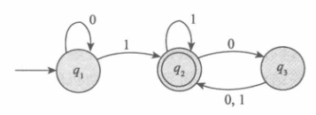
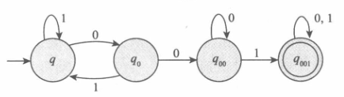

theory-计算理论导引1-1
目录
第 1 章 正则语言
将现实计算机中复杂难的问题直接建立易于处理的数学理论——引入计算模型
- 计算模型（Computational Model）
- 理想计算机
- 准绝地刻画了某些特征，同时忽略一些特征。因此，针对关注的特征，采用不同的计算模型。
- 最简单模型——自动机（Automation）
1.1 有穷自动机
- 什么是“有穷自动机”？
- 描述能力和资源及其有限的计算机模型。
- 从数学角度考虑“有穷自动机”
- 只做抽象的描述，不涉及任何具体的应用
- 接受输入：字符串
- 输出：是非型
- 如此有限，能做什么？
- 很多事情（机电设备核心部位）
自动门控制器实例:

控制器处于CLOSED状态，假设输入如下信号：FRONT，REAR，NEITHER，FRONT，BOTH，NEITHER，REAR，NEITHER，考虑状态的变化。
可以给出状态和信号之间的计算。

- $M_1$ 的状态图
- 起始状态(start state) $q_1$ 用一个指向它的无出发点的箭头表示。
- 接收状态(accept state) $q_2$ 带有双圈。
- 从一个状态指向另一个状态的箭头称为转移。
| 状态/信号 | 0 | 1 |
|---|---|---|
| $q_1$ | $q_1$ | $q_2$ |
| $q_2$ | $q_3$ | $q_2$ |
| $q_3$ | $q_2$ | $q_2$ |
- 当这个自动机接收到输入字符串，例如 1101 时，它处理这个字符串并产生一个输出。输出是接受或拒绝。
- 处理从 $M_1$ 的起始状态开始。自动机从左至右一个接一个地接受输入字符串的所有符号。
- 读到一个符号之后，$M_1$ 沿着标有该符号的转移从一个状态移动到另一个状态。
- 当读到最后一个符号时，$M_1$ 产生它的输出。
- 如果 $M_1$ 现在处于一个接受状态，则输出为接受；
- 否则输出为拒绝。
用 C 语言描述自动机：
|
自动机对应于只有 if，goto，无数组，无内部变量的程序；
程序不如图形直观。
1.1.1 有穷自动机的形式化定义
- 有穷自动机是一个 5 元组（$Q,\Sigma,\delta,q_0,F$）（状字转起接），其中
- $Q$ 是一个有穷集合，称为状态集。
- $\Sigma$ 是一个有穷集合，称为字母表。
- $\delta:Q\times \Sigma\to Q$ 是转移函数。
- $q_0\in Q$ 是起始状态。
- $F\subseteq Q$ 是接收状态集。
可以把 $M_1$ 形式地写成 $M_1=(Q,\Sigma,\delta,q_1,F)$，其中
$Q=\{q_1,q_2,q_3\}$
$\Sigma=\{0,1\}$
$\delta$ 描述为:
| 状态/信号 | 0 | 1 |
| ————- | ——- | ——- |
| $q_1$ | $q_1$ | $q_2$ |
| $q_2$ | $q_3$ | $q_2$ |
| $q_3$ | $q_2$ | $q_2$ |$q_1$ 是起始状态。
$F=\{q_2\}$
1.1.2 有穷自动机举例
即，$M_1$ 可用形式化描述为 $M_1=(\{q_1,q_2\},\{0,1\},\delta,q_1,\{q_2\})$，转移函数 $\delta$ 为：
| 状态/信号 | 0 | 1 |
|---|---|---|
| $q_1$ | $q_1$ | $q_2$ |
| $q_2$ | $q_3$ | $q_2$ |
| $q_3$ | $q_2$ | $q_2$ |
形式化描述就是一个 5 元组。
若 $A$ 是机器 $M$ 接受的全部字符串集，则称 $A$ 是机器 $M$ 的语言，记作 $L(M)=A$，又称 $M$ 识别 $A$ 或 $M$ 接受 $A$。（把计算模型和语言结合到一起，而语言又可以与问题进行编码，因此就通过语言把计算模型和问题关联起来）
$L(M_1)=\{w|w至少一个1并且在最后的1后面有偶数个0\}$
1.1.3 计算的形式化定义
形式化定义能够清除在非形式化描述中可能出现的任何二义性。
设 $M=(Q,\Sigma,\delta,q_0,F)$ 是一台有穷自动机，$w=w_1 w_2 … w_n$ 是一个字符串并且其中任一 $w_i$ 是字母表 $\Sigma$ 的成员。如果存在 $Q$ 中的状态序列 $r_0,r_1,…,r_n$，满足下述条件：(为了解释自动机如何接受这个字符串)
- $r_0=q_0$ （起始状态吻合）
- $\delta(r_i,w_{i+1})=r_{i+1},i=0,…,n-1$ (转移函数吻合)
- $r_n\in F$ (接收状态吻合)
则 $M$ 接受 $w$。
如果 $A=\{w|M接受w\}$，则称 $M$ 识别语言 $A$。
如果一个语言被一台有穷自动机识别，则称它是正则语言（regular language）。
1.1.4 设计有穷自动机
例1：设计有穷自动机 $E_1$,假设字母表是 $\{0,1\}$，识别的语言由所有含有奇数个 1 的字符串组成。

例2：设计有穷自动机 $E_2$，使其能够识别含有 001 作为字串组成的正则语言。
